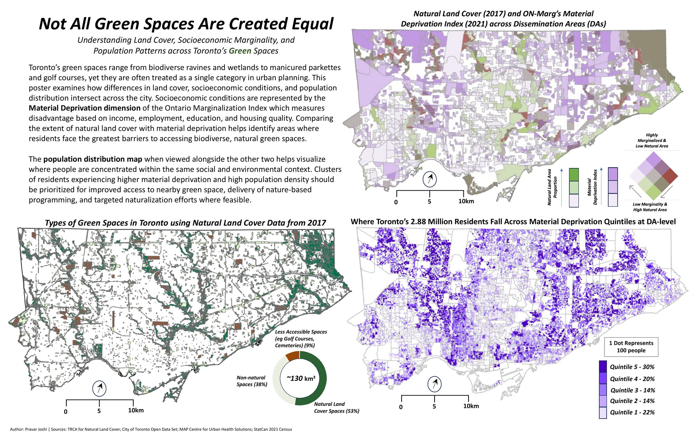

A Spatial and Socioeconomic Analysis of Toronto's Green Space
This poster examines the distribution and accessibility of Toronto's green spaces, focusing on areas containing natural land cover such as forests, meadows, and wetlands. The analysis begins from the premise that green space is not a single category: both cemeteries and Toronto's ravine system are classified equally as green space despite offering different ecological and social benefits. It classifies the city's green spaces (natural areas, recreational parks) and compares their spatial distribution to the Material Resources dimension of the Ontario Marginalization Index (ON-Marg), which measures socioeconomic disadvantage and barriers to meeting basic needs.

Research shows that biodiverse green spaces with trails and cultural amenities support mental well-being, physical health, and social cohesion. A dot density map is included to show where Toronto's population is concentrated across levels of material deprivation, and is meant to be viewed alongside the others to understand which communities may benefit the most from increased awareness or access to natural green spaces.
Data
The analysis uses the following datasets: the TRCA Land Use Map, a polygon layer; Toronto Green Spaces, a polygon layer covering all city-managed parks and open areas; Ontario Marginalization Index (Material Resources dimension) values at the dissemination area (DA) level, with high values indicating a high level of marginalization; a pedestrian network polyline layer for calculating walking-distance buffers for the inset map; and a DA polygon layer for boundaries.
Cartographic Design & Implementation
The analysis includes three thematic maps. The first map shows the land-use composition of Toronto's green spaces using the Land Use and Green Spaces datasets. Eight relevant land-use classifications for green spaces are grouped into three categories: natural land features (e.g., forests) are shaded dark green; recreational spaces such as parkettes are shaded light green; and less accessible spaces (e.g., cemeteries, golf courses, ponds) are shaded brown.
The second map is a bi-variate choropleth at the DA level showing the percentage of natural land cover within a DA and the Material Resources index value from ON-Marg. Material Resources is a quintile index grouped into three natural breaks for simplicity, and the percentage of natural land cover in a DA is also grouped into three breaks (0 to 8.9%, 8.9 to 29%, 29 to 77%). The bi-variate choropleth uses a 3x3 grid legend, with each variable's groupings labelled Low, Medium, and High since these are not commonly known variable ranges. Green hues show the natural land cover proportion and purple hues show the Material Resources variable.
The third map shows a dot density of population at the DA level, symbolized by the Material Resources quintile index using a gradient of purple hues to match the bi-variate choropleth.
Possible Uses and Limitations
These maps can guide urban-planning decisions by showing where access to natural green spaces could be improved for marginalized residents, and by providing a basic framework to evaluate green space quality, not just quantity. The main limitations include the failure to account for seasonality in green space use, the potential for the Modifiable Areal Unit Problem to influence results (for example, a DA may appear to have high natural cover if it contains an inaccessible ravine slope that benefits few residents), and a reliance on the Material Resources Index, which may not be the preferred deprivation index for all map readers.